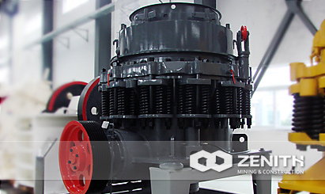
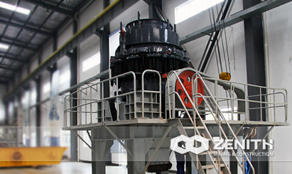
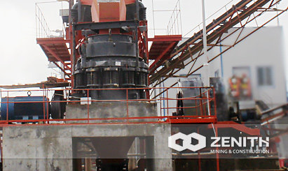
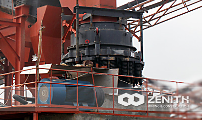

- 
- 
- 
- 
S Cone Crusher
Cone crusher is the world's oldest type of crusher, also is the world's most widely used and the larger stock of crushing machinery. To get a higher productivity, better reliability and flexibility, longer service life, and better final product quality, Zenith's S series cone crusher is absolutely best choice for mining investors.
After improving the traditional cone crusher, its structure is more reasonable and perfect technical parameters is more advanced, in the manufacture, installation, use, maintenance, etc. are excellent expression.
Widely Application of S Cone Crusher
S cone crusher offers several outstanding features such as excellent tramp release system, unique hydraulic lifting system, all of these features ensure the S series cone crusher offer the unbeatable performance in secondary, tertiary and quaternary applications.
S Cone Crusher made is widely used in industries like iron ore extraction, construction, road building, chemistry etc, to crush many kinds of mid-hard or hard rocks and ores such as iron ore, limestone, granite, basalt, quartz etc. The standard ones are used for intermediate crushing; the medium ones are used for fine crushing and the short head ones are used for super thin crushing.
S cone crusher Benefits and advantages
- More crushing cavity. S series cone crusher adopts high cavity design , so users can choose crusher cavity type according to the site of broken high efficiency, uniform particle size, well stone type, rolling acetabula wall and the broken wall and uniform wear and long service life.
- In order to support large efforts in key parts broken selected on a special material.
- Low cost of daily operation, maintenance and parts selection and structure design is reasonable, long life, low power consumption, distribution reasonable.
- Stable bevel wheel transmission device
- Balanced run-out rotation ensures best capacity.
- Proper operation, continuously load until the machine shut down scheduled.
The tacnology data
| Model | Movable Cone Diametermm (inch) | Chamber Style | Opening Side | Closed Side | Discharging Opening (mm) | REV (r/min) | Power (kw) | Motor Model | Capacity (t/h) | Machine Size (mm) |
|---|---|---|---|---|---|---|---|---|---|---|
| Max.Feeding (mm) | ||||||||||
| 36(3′) | 900 (3′) | medium | 83 | 102 | 9-22 | 580 | 6-75 | Y315S-6/75 | 45-91 | 2821×1880 ×2164 |
| coarse | 159 | 175 | 13-38 | 59-163 | ||||||
| 36(3′) | 914 (3′) | fine | 13 | 41 | 3-13 | 580 | 6-75 | Y315S-6/75 | 27-90 | 2821×1880 ×2410 |
| medium | 33 | 60 | 3-16 | 27-100 | ||||||
| coarse | 51 | 76 | 6-19 | 65-140 | ||||||
| 51(4.25′) | 1295 (4 1/4′) | fine | 109 | 137 | 13-31 | 485 | 6-185 | Y355M2-6/185 | 109-181 | 2800×2342 ×2668 |
| medium | 188 | 210 | 16-31 | 132-253 | ||||||
| coarse | 216 | 241 | 19-51 | 172-349 | ||||||
| 51(4.25′) | 1295 (4 1/4′) | fine | 29 | 64 | 3-16 | 485 | 6-160 | Y355M1-6/160 | 36-163 | 2800×2342 ×2668 |
| medium | 54 | 89 | 6-16 | 82-163 | ||||||
| coarse | 70 | 105 | 10-25 | 109-227 | ||||||
| 66(5.5′) | 1650 (5 1/2′) | fine | 188 | 209 | 16-38 | 485 | 6-240 | 181-327 | 3911×2870 ×3771 | |
| medium | 213 | 241 | 22-51 | 258-417 | ||||||
| coarse | 241 | 268 | 25-64 | 299-635 | ||||||
| 66(5.5′) | 1650 (5 1/2′) | fine | 35 | 70 | 5-13 | 485 | 6-240 | 90-209 | 3917×2870 ×3771 | |
| medium | 54 | 89 | 6-19 | 136-281 | ||||||
| coarse | 98 | 133 | 10-25 | 190-336 | ||||||
| 84(7′) | 2134 (7′) | fine | 253 | 278 | 19-38 | 435 | 6-400 | 381-726 | 5200×4300 ×4700 | |
| medium | 303 | 334 | 25-51 | 608-998 | ||||||
| coarse | 334 | 369 | 31-64 | 870-1400 | ||||||
| 84(7′) | 2134 (7′) | fine | 51 | 105 | 5-16 | 435 | 6-400 | 190-408 | 5200×4300 ×4700 | |
| medium | 95 | 133 | 10-19 | 354-508 | ||||||
| coarse | 127 | 178 | 13-25 | 454-599 | ||||||